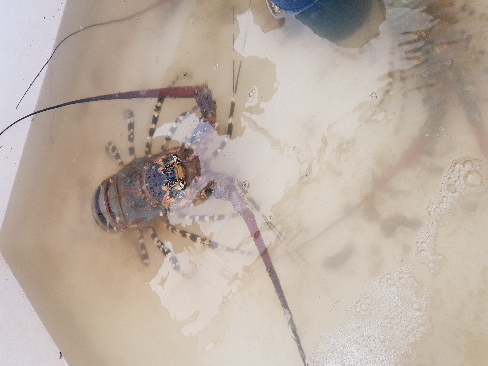

Student can identify their payment fees by given payment receipt. Not only that but also students can view their payment details through their accountthis issue create disturbance to the student while they are in lecture session and mean while the payment process not complete until they are going to sit for exam. Poor flowing of student information among departments concerned that lead to delaying of recording student payment information at account department. The during the examination demand of the information will be very high in order for the administration to know the number of students who paid and not paid college fees for easy decision to which they were going to sit for the examination paper.The during the examination demand of the information will be very high in order for the administration to know the number of students who paid and not paid college fees for easy decision to which they were going to sit for the examination paper. Recently according to dependence of each department to prepare their information that lead to difficultness for account department acquiring and preparing student payment information efficiently and at specific time bound when they were immediately needed, in order to reduce such problems at account department should be a link among department in order to exchange student information without any difference of information among departments. Despite of problems discovered at account department, the proposed system overcomes all problems and increase effectiveness and efficiencies of account department so as to acquire college and reliable student payment information.The during the examination demand of the information will be very high in order for the administration to know the number of students who paid and not paid college fees for easy decision to which they were going to sit for the examination paper. Recently according to dependence of each department to prepare their information that lead to difficultness for account department acquiring and preparing student payment information efficiently and at specific time bound when they were immediately needed, in order to reduce such problems at account department should be a link among department in order to exchange student information without any difference of information among departments. Despite of problems discovered at account department, the proposed system overcomes all problems and increase effectiveness and efficiencies of account department so as to acquire college and reliable student payment information.The during the examination demand of the information will be very high in order for the administration to know the number of students who paid and not paid college fees for easy decision to which they were going to sit for the examination paper. Recently according to dependence of each department to prepare their information that lead to difficultness for account department acquiring and preparing student payment information efficiently and at specific time bound when they were immediately needed, in order to reduce such problems at account department should be a link among department in order to exchange student information without any difference of information among departments. Despite of problems discovered at account department, the proposed system overcomes all problems and increase effectiveness and efficiencies of account department so as to acquire college and reliable student payment information. Recently according to dependence of each department to prepare their information that lead to difficultness for account department acquiring and preparing student payment information efficiently and at specific time bound when they were immediately needed, in order to reduce such problems at account department should be a link among department in order to exchange student information without any difference of information among departments. Despite of problems discovered at account department, the proposed system overcomes all problems and increase effectiveness and efficiencies of account department so as to acquire college and reliable student payment information.